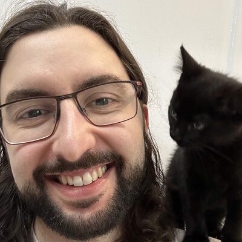
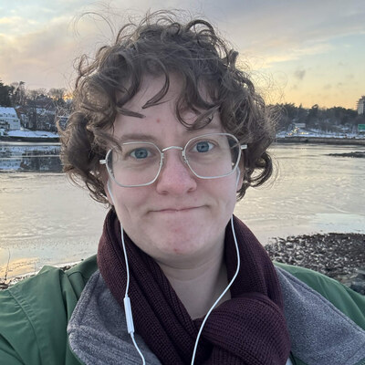
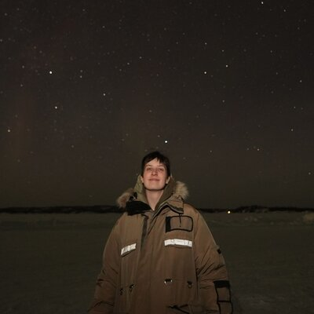

Executive
The people who keep the society running. Say hi!
-

Benjamin Hansson
he/him
President
Hi everyone! I’m Ben, a PhD student in Physics, co-supervised by Dr. Laurent Kreplak at Dal and Dr. Danielle Tokarz at Saint Mary’s University. I specialize in biophotonics, the interaction between light and biological tissue. My thesis research explores the structural mechanisms of aging by investigating collagen modification due to glycation using nonlinear microscopy techniques. Outside of research, I enjoy reading, creative writing, classical guitar, Dungeons and Dragons, and probably several other hobbies I’ve forgotten about.
-

Sarah Eaton
she/her
Vice President
Hey! I am a PhD candidate in medical physics, studying multi-isotope SPECT in the Brewer lab. I can talk your ear off about the different types of medical imaging and the advantages and disadvantages of each. I love nerding out about all things science and science fiction. In my free time I like reading, cross-stitch, hiking, Jeopardy, and puzzles!
-
Gavin Kerr
he/him
Physics Representative
I’m a PhD candidate studying complex fluids, with a focus on liquid bridges. My interests include machine learning and computational fluid dynamics, and I enjoy building simulation and analysis tools in Python, C++ and Rust.
-

Dara Bird
they/them
Treasurer
Hello! My name is Dara. I am a MSc student in atmospheric science in the CAC Lab studying low-level Arctic mixed-phase cloud microphysics using remote sensing and cold cloud interactions with the environment. Outside of the office, I enjoy listening to music, playing video games, and spending time with friends!